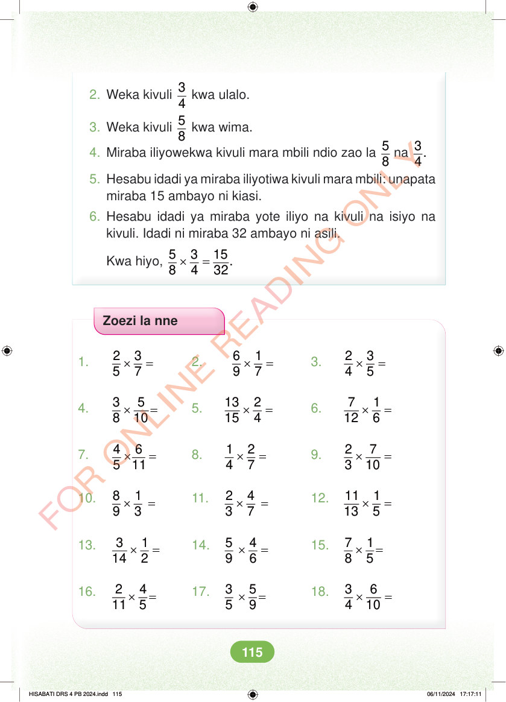

2. Weka kivuli 3 4 kwa ulalo. 3. Weka kivuli 5 8 kwa wima. 4. Miraba iliyowekwa kivuli mara mbili ndio zao la 5 8 na 3. 4 5. Hesabu idadi ya miraba iliyotiwa kivuli mara mbili: unapata miraba 15 ambayo ni kiasi. 6. Hesabu idadi ya miraba yote iliyo na kivuli na isiyo na kivuli. Idadi ni miraba 32 ambayo ni asili. Kwa hiyo, × = 5 3 15. 8 4 32 Zoezi la nne 1. × = 2 3 5 7 2. × = 6 1 9 7 3. × = 2 3 4 5 4. × = 3 5 8 10 5. × = 13 2 15 4 6. × = 7 1 12 6 7. × = 4 6 5 11 8. × = 1 2 4 7 9. × = 2 7 3 10 10. × = 8 1 9 3 11. × = 2 4 3 7 12. × = 11 1 13 5 13. × = 3 1 14 2 14. × = 5 4 9 6 15. × = 7 1 8 5 16. × = 2 4 11 5 17. × = 3 5 5 9 18. × = 3 6 4 10 HISABATI DRS 4 PB 2024.indd 115 HISABATI DRS 4 PB 2024.indd 115 06/11/2024 17:17:11 06/11/2024 17:17:11